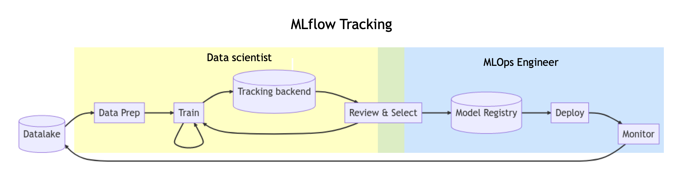
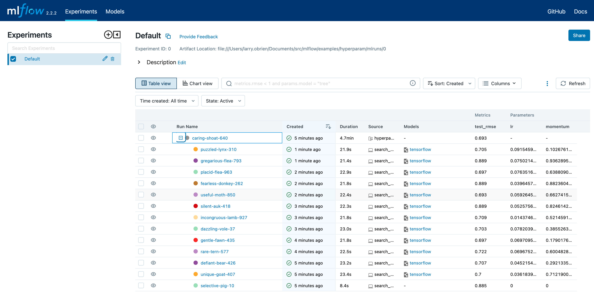
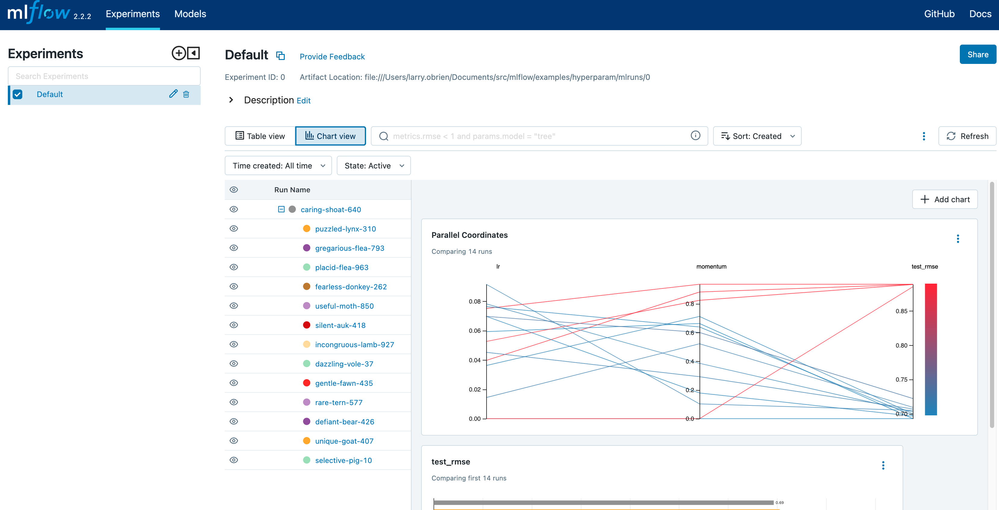
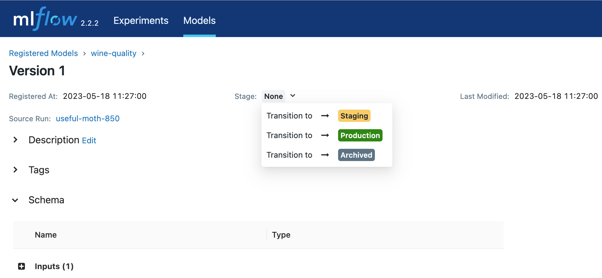

Quickstart: Compare runs, choose a model, and deploy it to a REST API
In this quickstart, you will:
Run a hyperparameter sweep on a training script
Compare the results of the runs in the MLflow UI
Choose the best run and register it as a model
Deploy the model to a REST API
Build a container image suitable for deployment to a cloud platform
As an ML Engineer or MLOps professional, you can use MLflow to compare, share, and deploy the best models produced by the team. In this quickstart, you will use the MLflow Tracking UI to compare the results of a hyperparameter sweep, choose the best run, and register it as a model. Then, you will deploy the model to a REST API. Finally, you will create a Docker container image suitable for deployment to a cloud platform.
{kind=link}

Set up
Install MLflow. See the MLflow Data Scientist quickstart for instructions
Clone the MLflow git repo
Run the tracking server:
mlflow server
Run a hyperparameter sweep
Switch to the examples/hyperparam/ directory in the MLflow git repo. This example tries to optimize the RMSE metric of a Keras deep learning model on a wine quality dataset. It has two hyperparameters that it tries to optimize: learning-rate and momentum.
This directory uses the MLflow Projects format and defines multiple entry points. You can review those by reading the MLProject file. The hyperopt entry point uses the Hyperopt library to run a hyperparameter sweep over the train entry point. The hyperopt entry point sets different values of learning-rate and momentum and records the results in MLflow.
Run the hyperparameter sweep, setting the MLFLOW_TRACKING_URI environment variable to the URI of the MLflow tracking server:
export MLFLOW_TRACKING_URI=http://localhost:5000
mlflow run -e hyperopt .
The hyperopt entry point defaults to 12 runs of 32 epochs apiece and should take a few minutes to finish.
Compare the results
Open the MLflow UI in your browser at the MLFLOW_TRACKING_URI. You should see a nested list of runs. In the default Table view, choose the Columns button and add the Metrics | test_rmse column and the Parameters | lr and Parameters | momentum column. To sort by RMSE ascending, click the test_rmse column header. The best run typically has an RMSE on the test dataset of ~0.70. You can see the parameters of the best run in the Parameters column.
{kind=link}

Choose Chart view. Choose the Parallel coordinates graph and configure it to show the lr and momentum coordinates and the test_rmse metric. Each line in this graph represents a run and associates each hyperparameter evaluation run’s parameters to the evaluated error metric for the run.
{kind=link}

The red graphs on this graph are runs that fared poorly. The lowest one is a baseline run with both lr and momentum set to 0.0. That baseline run has an RMSE of ~0.89. The other red lines show that high momentum can also lead to poor results with this problem and architecture.
The graphs shading towards blue are runs that fared better. Hover your mouse over individual runs to see their details.
Register your best model
Choose the best run and register it as a model. In the Table view, choose the best run. In the Run Detail page, open the Artifacts section and select the Register Model button. In the Register Model dialog, enter a name for the model, such as wine-quality, and click Register.
Now, your model is available for deployment. You can see it in the Models page of the MLflow UI. Open the page for the model you just registered.
You can add a description for the model, add tags, and easily navigate back to the source run that generated this model. You can also transition the model to different stages. For example, you can transition the model to Staging to indicate that it is ready for testing. You can transition it to Production to indicate that it is ready for deployment.
Transition the model to Staging by choosing the Stage dropdown:
{kind=link}

Serve the model locally
MLflow allows you to easily serve models produced by any run or model version. You can serve the model you just registered by running:
mlflow models serve -m "models:/wine-quality/Staging" --port 5002
(Note that specifying the port as above will be necessary if you are running the tracking server on the same machine at the default port of 5000.)
You could also have used a runs:/<run_id> URI to serve a model, or any supported URI described in Artifact Stores.
To test the model, you can send a request to the REST API using the curl command:
curl -d '{"dataframe_split": {
"columns": ["fixed acidity","volatile acidity","citric acid","residual sugar","chlorides","free sulfur dioxide","total sulfur dioxide","density","pH","sulphates","alcohol"],
"data": [[7,0.27,0.36,20.7,0.045,45,170,1.001,3,0.45,8.8]]}}' \
-H 'Content-Type: application/json' -X POST localhost:5002/invocations
Inferencing is done with a JSON POST request to the invocations path on localhost at the specified port. The columns key specifies the names of the columns in the input data. The data value is a list of lists, where each inner list is a row of data. For brevity, the above only requests one prediction of wine quality (on a scale of 3-8). The response is a JSON object with a predictions key that contains a list of predictions, one for each row of data. In this case, the response is:
{"predictions": [{"0": 5.310967445373535}]}
The schema for input and output is available in the MLflow UI in the Artifacts | Model description. The schema is available because the train.py script used the mlflow.infer_signature method and passed the result to the mlflow.log_model method. Passing the signature to the log_model method is highly recommended, as it provides clear error messages if the input request is malformed.
Build a container image for your model
Most routes toward deployment will use a container to package your model, its dependencies, and relevant portions of the runtime environment. You can use MLflow to build a Docker image for your model.
mlflow models build-docker --model-uri "models:/wine-quality/1" --name "qs_mlops"
This command builds a Docker image named qs_mlops that contains your model and its dependencies. The model-uri in this case specifies a version number (/1) rather than a lifecycle stage (/staging), but you can use whichever integrates best with your workflow. It will take several minutes to build the image. Once it completes, you can run the image to provide real-time inferencing locally, on-prem, on a bespoke Internet server, or cloud platform. You can run it locally with:
docker run -p 5002:8080 qs_mlops
This Docker run command runs the image you just built and maps port 5002 on your local machine to port 8080 in the container. You can now send requests to the model using the same curl command as before:
curl -d '{"dataframe_split": {"columns": ["fixed acidity","volatile acidity","citric acid","residual sugar","chlorides","free sulfur dioxide","total sulfur dioxide","density","pH","sulphates","alcohol"], "data": [[7,0.27,0.36,20.7,0.045,45,170,1.001,3,0.45,8.8]]}}' -H 'Content-Type: application/json' -X POST localhost:5002/invocations
Deploying to a cloud platform
Virtually all cloud platforms allow you to deploy a Docker image. The process varies considerably, so you will have to consult your cloud provider’s documentation for details.
In addition, some cloud providers have built-in support for MLflow. For instance:
all support MLflow. Cloud platforms generally support multiple workflows for deployment: command-line, SDK-based, and Web-based. You can use MLflow in any of these workflows, although the details will vary between platforms and versions. Again, you will need to consult your cloud provider’s documentation for details.
Next steps
This quickstart has shown you how to use MLflow to track experiments, package models, and deploy models. You may also wish to learn about:
Quickstart: Install MLflow, instrument code & view results in minutes
Use the MLflow Registry to store and share versioned models, see MLflow Model Registry
Use MLflow Projects for packaging your code in a reproducible and reusable way, see MLflow Projects
Use MLflow Recipes to create workflows for faster iterations and easier deployment, see MLflow Recipes
Tracking experiments and packaging models (see :ref:tracking:).